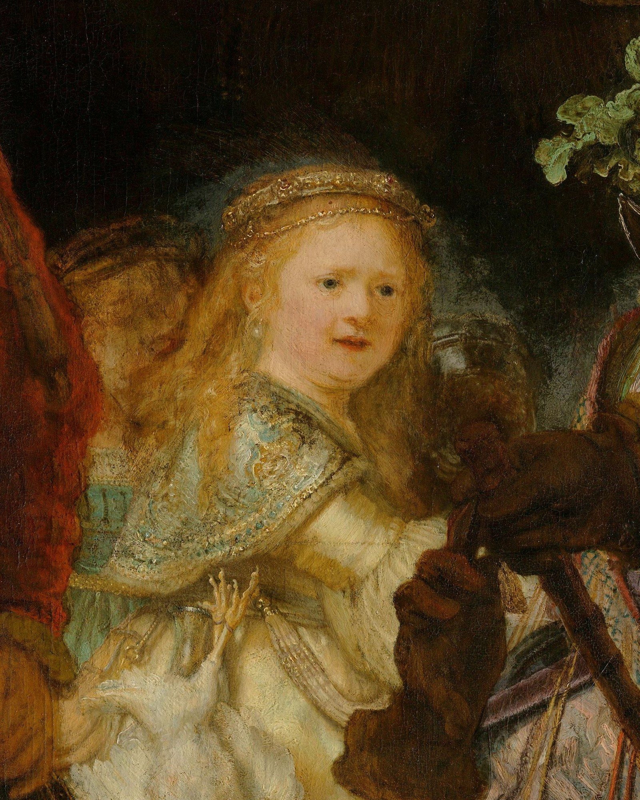
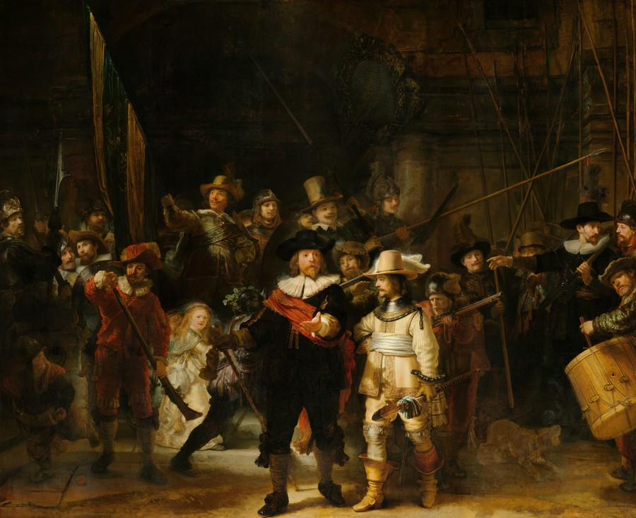
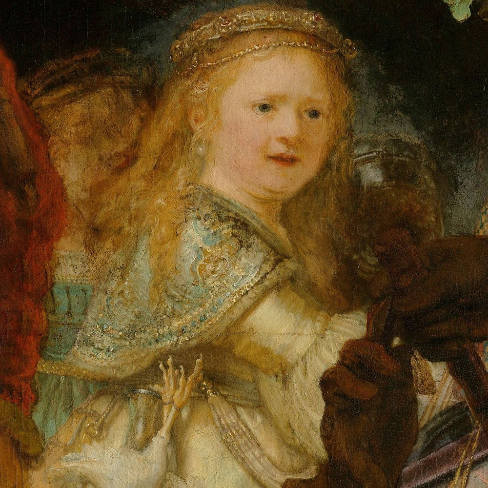
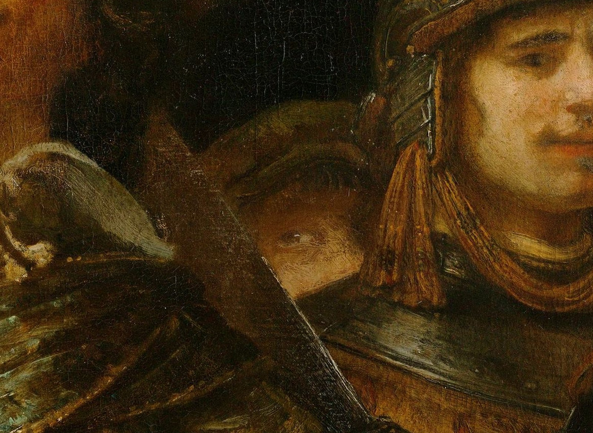
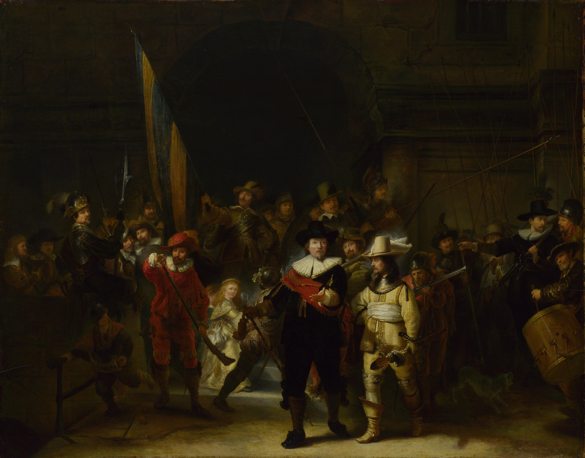
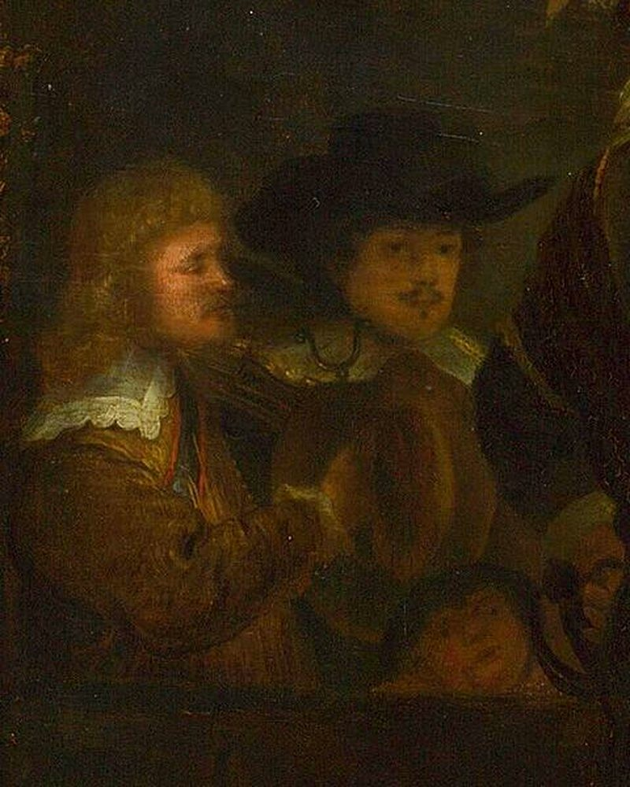
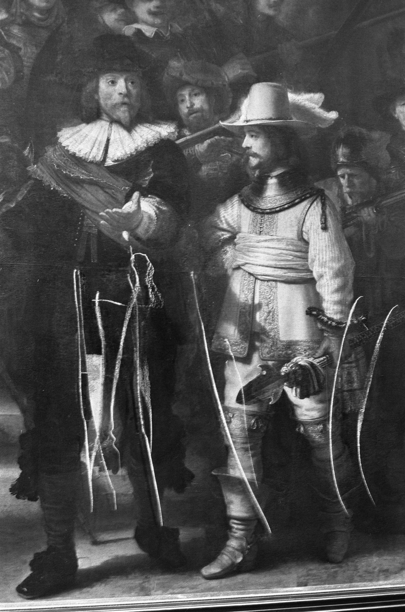
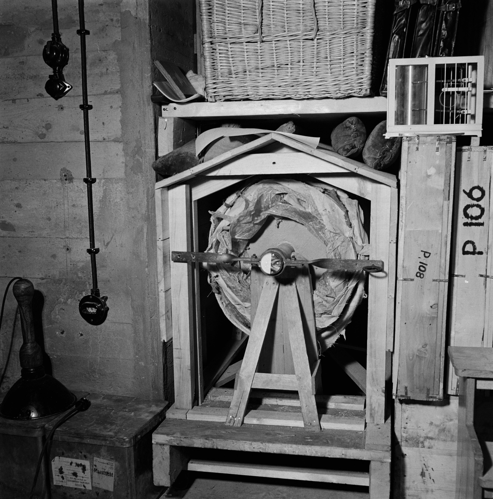
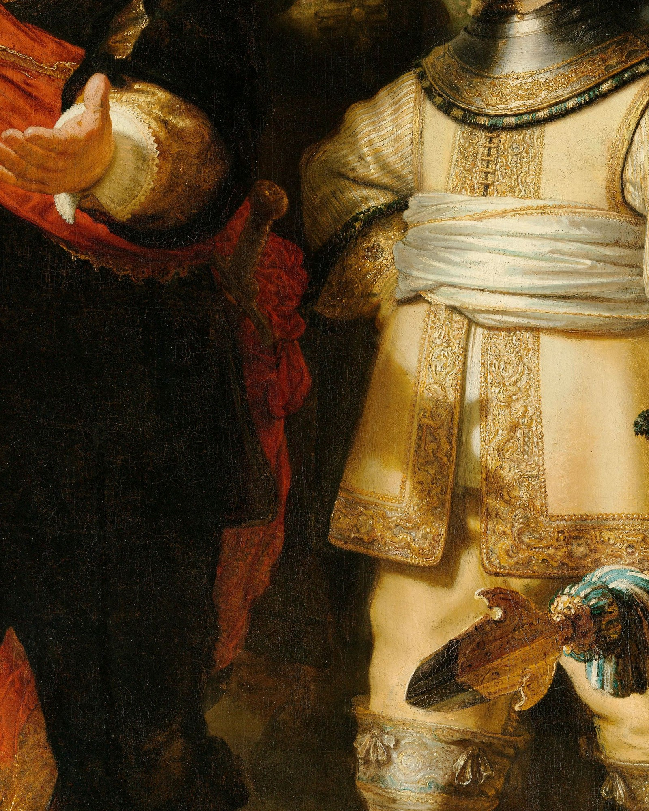
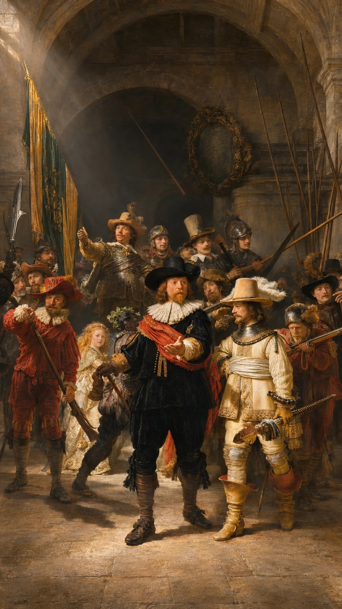

And three of its people are missing.
SwipeThat’s 155 years after Rembrandt finished it. By then, darkened varnish and grime had sunk his scene into gloom. Cleaning in the 1940s brought the light back.
I would have preferred him to put more light into it.Samuel van Hoogstraten · Rembrandt’s former pupil · 1678
Yet he also wrote that beside it, the other militia paintings in the hall looked like playing cards.


At her waist hangs a dead chicken with huge claws, and behind it a pistol called a klover. Claw and klover were emblems of the Kloveniers, the militia who paid for the painting.

Just one eye and a beret, squeezed between two guardsmen. Historians think it may be Rembrandt himself, slipping into the crowd he painted.


LostMoved to the Town Hall, it was too big for its wall. Strips came off all four sides, 64 cm from the left. Three figures vanished. This copy still shows them.

1975 · the cuts
1945 · rolled up
Light falls on the captain’s open hand, and its shadow lands on his lieutenant’s coat, right where Amsterdam’s coat of arms is stitched. The city, safe in the militia’s hands.

One camera flight, straight into the militia.